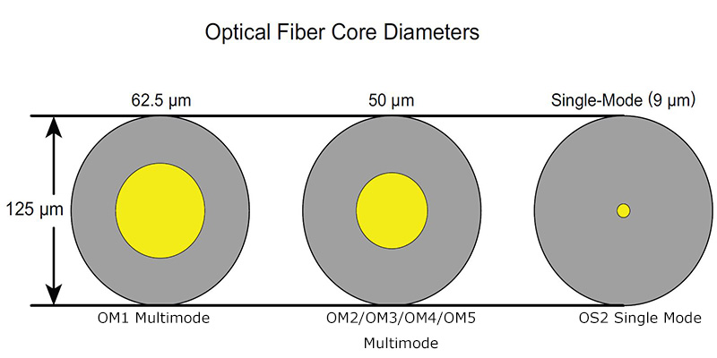

Las fibras ópticas son hilos de vidrio o de plástico fundido que transmiten a largas distancias pulso de luz láser, que llevan consigo paquetes de datos informáticos. Esta es la tecnología más avanzada para poder transmitir información por medio de cables.
Sabemos que los cables llevan mayormente hilos de cobre o metal, pero la diferencia de esto es que cuando se transmiten informaciones por medio del metal o del cobre a largas distancias, los paquetes llegan incompletos, debido a que este material genera muchas pérdidas.
La fibra óptica transmite con exactitud la cantidad de paquetes de datos sin generar ninguna pérdida gracias a que se transmite en forma de luz. Esta manera de transmitir información es mucho más segura que cualquier otra, debido a que no se ve afectada por interferencias electromagnéticas.
Dispone de un núcleo de mayor diámetro que permite el paso de múltiples modos de luz. Esto significa que se pueden transmitir más tipos de datos. Los cables de fibra multimodo se presentan en dos tamaños de núcleo y cinco variantes: 62,5 micras OM1, 50 micras OM2, 50 micras OM3, 50 micras OM4 y 50 micras OM5. (OM significa "modo óptico".) Todos disponen del mismo diámetro de revestimiento de 125 micrones, pero el cable de fibra de 50 micras tiene un núcleo más pequeño (parte donde se transmite la luz por la fibra). Aunque todos pueden emplearse de la misma manera, los cables de 50 micras, particularmente OM5, OM3 y OM4 optimizados para láser, proporcionan longitudes de enlaces mayores y/o velocidades más altas, además se recomiendan para aplicaciones locales (redes troncales, enlaces horizontales y entre edificios), y deben considerarse para nuevas instalaciones. OM3, OM4 y OM5 pueden utilizarse también con fuentes de LED y luz láser.
A diferencia del cable multimodo, el cable monomodo solo dispone de un modo de propagación: una sola longitud de onda de luz en el núcleo de fibra. Esto significa que no hay interferencias ni solapamientos entre las distintas longitudes de onda de luz que pudieran distorsionar sus datos a grandes distancias, como ocurre con el cable multimodo. El cable monomodo (OS2) tiene un núcleo de vidrio pequeño (8-10 micras), que es mucho más pequeño que el multimodo, y solo una ruta para la luz o modo de propagación. (OS significa modo óptico simple.) Con una sola longitud de onda de la luz transmitiendo a través de su núcleo, la fibra monomodo realinea la luz hacia el centro del núcleo en vez de simplemente rebotar desde el borde del núcleo como lo hace el cable multimodo. OS1 se aplica a cables de tubo ajustado para uso en interiores, mientras que OS2 se aplica a cables de tubo holgado
[ 1 ] ¿Cuál es la diferencia entre fibra monomodo y multimodo? (2018, Agosto 23) [Online]. Available : https://medium.com/@xxxamin1314/cu%C3%A1l-es-la-diferencia-entre-fibra-monomodo-y-multimodo-807869303486 [2] ¿Cuál es la diferencia entre los cables de Fibra Óptica Multimodo y Monomodo? [Online]. Available : https://www.blackbox.com.mx/mx-mx/page/28535/Recursos/Technical/black-box-explica/Fibre-Optic-Cable/Cable-de-fibra-optica-multimodo-vs-monomodo omo-saber-cual-comprar
¿Cuáles son los principales tipos de fibra óptica y en qué se diferencia cada uno? [Online]. Available: https://internetpasoapaso.com/tipos-de-fibra-optica/